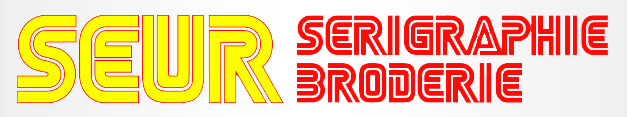

Conseil
Nous vous aidons à choisir le support et le procédé selon votre visuel, vos quantités et votre usage.
Un atelier spécialisé dans le marquage textile professionnel, à Pontault-Combault en Seine-et-Marne.
Bienvenue chez SEUR Sérigraphie Broderie. D'abord axés sur la confection, nous nous sommes spécialisés dès l'an 2000 dans la broderie, la sérigraphie et le transfert.
Nous accompagnons les professionnels, collectivités, clubs et associations dans leurs projets de marquage publicitaire et de personnalisation textile.

Nous vous aidons à choisir le support et le procédé selon votre visuel, vos quantités et votre usage.
Notre parc de machines nous permet de répondre aux petites personnalisations comme aux productions en série.
Un bon à tirer valide votre projet avant production. Pour la broderie, un premier tirage peut être vérifié avant la série.
Notre siège social et atelier sont installés au 84 Avenue Charles Allain, 77340 Pontault-Combault, à environ 30 kilomètres à l'est de Paris.